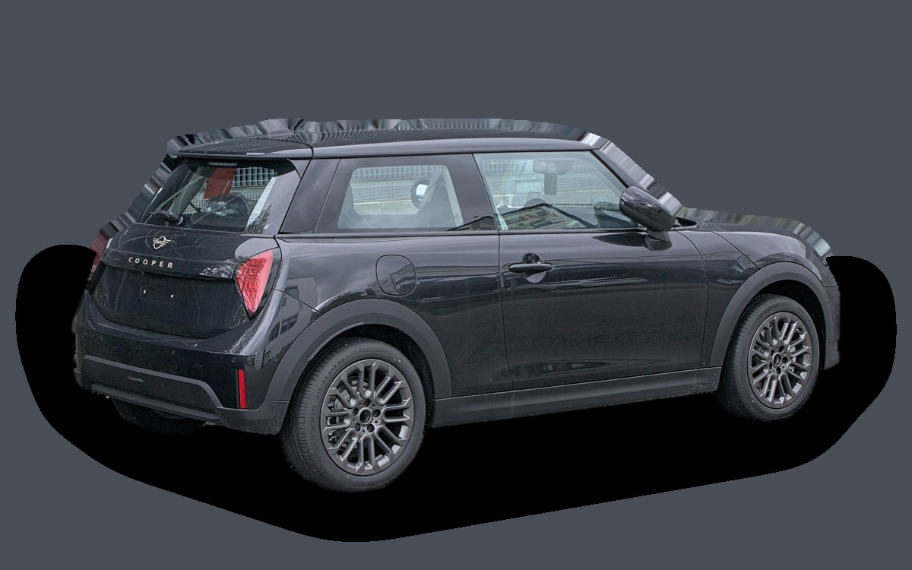

Vad kostar en Mini Cooper per månad?
En Mini Cooper från 2026 kostar cirka 5 120 kr i månaden, allt inräknat.
5 120 krper månad, årsmodell 2026
335 000 krpris, årsmodell 2026
335 000 krnypris från
Dprisvärdhetsbetyg (2026)

_IMG_8978.jpg){kind=link}
Månadskostnad per årsmodell
| Årsmodell | Version i beräkningen | Pris | Per månad | Betyg |
|---|---|---|---|---|
| 2026 | Cooper C 156, Essential | 335 000 kr | 5 120 kr | D |
Räknat på 5 års ägande och 1 250 mil per år, med bränslepriser från 2026-10-22. Månadskostnaden innehåller värdeminskning, drivmedel, service och reparationer, försäkring och fordonsskatt.
Så fördelas kostnaden för en 2026:a
- Värdeminskning: 2 513 kr/mån
- Drivmedel: 1 293 kr/mån
- Service och reparationer: 372 kr/mån
- Försäkring: 530 kr/mån
- Fordonsskatt: 412 kr/mån
Begagnatpriser i annonser
| Årsmodell | Medianpris | Annonser | Typiskt miltal |
|---|---|---|---|
| 2025 | 444 900 kr | 10 | 700 mil |
| 2024 | 309 400 kr | 14 | 2 000 mil |
Medianpriset i svenska annonser per årsmodell i oktober 2026 (källa: Blocket). Annonspriser är utgångspriser, och slutpriset kan bli lägre.
Motorer och versioner
| Motor | Drivmedel | Effekt | 0–100 km/h | Förbrukning (WLTP) | Räckvidd | Årsmodeller | Pristillägg |
|---|---|---|---|---|---|---|---|
| Cooper C 156 | Bensin | 156 hk | 7,7 s | 6 l/100 km | – | från 2024 | – |
| Cooper E 184 | El | 184 hk | 7,3 s | 14,5 kWh/100 km | 305 km | från 2024 | +51 900 kr |
| Cooper S 204 | Bensin | 204 hk | 6,6 s | 6,4 l/100 km | – | från 2024 | +47 600 kr |
| Cooper SE 218 | El | 218 hk | 6,7 s | 14,7 kWh/100 km | 402 km | från 2024 | +98 800 kr |
| John Cooper Works 231 | Bensin | 231 hk | 6,1 s | 6,9 l/100 km | – | från 2025 | +90 000 kr |
- Utrustning: Essential, Classic (+14 200 kr), Favoured (+30 200 kr)
Fakta
- Kaross
- Halvkombi
- Årsmodeller
- sedan 2024
- Nypris från
- 335 000 kr
- Bagage
- 210 liter
- Euro NCAP
- 4 av 5 stjärnor
- Nybilsgaranti
- 3 år
- Driftsäkerhet
- 4,5 av 5
- Helförsäkring, uppskattning
- 7 100 kr/år
- Service, uppskattning
- 3 600 kr/år
Fördelar och nackdelar
Fördel
Rolig att köra och håller värdet bra.
Nackdel
Mycket litet bagage och trångt bak.
Liknande bilar
 Renault 5 E-Tech4 435 kr/mån som 2026:a
Renault 5 E-Tech4 435 kr/mån som 2026:a Renault Megane E-Tech4 313 kr/mån som 2024:a
Renault Megane E-Tech4 313 kr/mån som 2024:a Mercedes-Benz A-klass3 751 kr/mån som 2023:a
Mercedes-Benz A-klass3 751 kr/mån som 2023:a Toyota Prius3 682 kr/mån som 2023:a
Toyota Prius3 682 kr/mån som 2023:a Mazda33 636 kr/mån som 2023:a
Mazda33 636 kr/mån som 2023:a Audi A3 Sportback3 618 kr/mån som 2023:a
Audi A3 Sportback3 618 kr/mån som 2023:a
Uppdaterad 2026-10-27 · annonsdata okt 2026